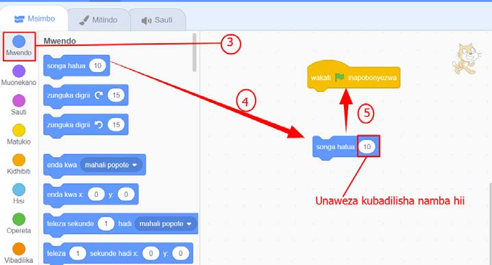
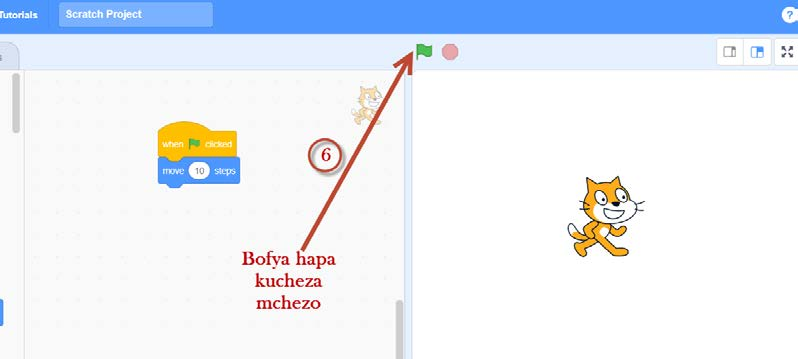

Kielelezo namba 23: Kuburuta na kuunganisha bloku
6.Bofya kibendera cha kijani ‘Anza’ kama inavyoonekana katika Kielelezo namba 24 ili kuchezesha Sprite.

Kielelezo namba 24: Kucheza mchezo wa kujongea
7.Badilisha hatua kutoka 10 kwenda 70, kisha cheza tena.Badilisha tena hatua kutoka 70 kwenda 130, kisha cheza tena.Je, umeona nini baada ya kubadilisha idadi ya hatua?
Kuhifadhi kazi
Kuhifadhi kazi yako kwa kutumia programu ya Scratch, fuata hatua zifuatazo:
SAYANSI DARASA LA IV KITABU CHA MWANAFUNZI.indd 128
17/09/2025 13:14